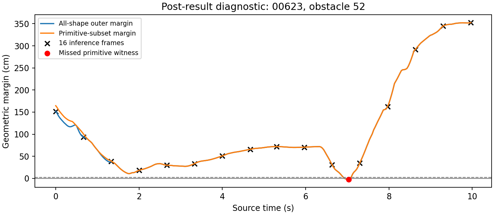

Research notebook / Humanoid traversal / 21 September 2026
Learning to move through clutter.
Which geometric details must a motion model preserve—and how can flow matching turn them into useful whole-body actions?
A complete review of our representation, generation and verification experiments. The promising results, the failed hypotheses, and the questions that should come next.
A humanoid moving through a furnished room cannot be treated as a point following a collision-free floor path. A route may clear the feet while striking the head; a crouch may clear a beam while the trailing shoulder is still underneath it. The relevant object is a whole-body trajectory through three-dimensional space, including preparation, constrained passage and recovery.
We want a robot to use its observations, measured state and navigation goal to propose coordinated future motions that a fixed controller can actually track. Several motions may work: turn sideways, crouch, choose a different route, slow down, or stop when a passage cannot be established. A useful generator must preserve these alternatives without averaging them into a collision.
Our research question
Under limited representation and inference budgets, can scene–motion pretraining preserve the local geometric distinctions that change whole-body traversability, and help a conditional flow model choose an appropriate motion early enough to execute it?
The phrase “critical moment” is a hypothesis about information, not a label for every low-clearance frame. The head’s closest approach may occur after the last practical time to start crouching. We therefore care about both where the constraint occurs and when the policy must respond. 小净空、关键决策时刻与高训练损失不是同一回事。
Our long-term task is conditional generation of a reference chunk M, given a causal observation map S_obs, measured history h, navigation goal g, and already committed reference prefix P:
C = (S_obs, h, g, P) M ~ pθ(M | C)
reference → interface/codec → fixed tracker → executed motion
Success eventually means reaching the goal, clearing the obstacle with the whole body, avoiding prohibited contacts and falls, and completing recovery or stopping. A safe refusal is a separate outcome from successful traversal. Geometric clearance alone does not establish balance, support, joint feasibility, perception quality or tracking success.
What exists today
The implemented generator emits only crouch amplitude, yaw and lateral shift, decoded into a seven-sphere motion proxy. It uses complete synthetic geometry and a fixed navigation direction. A separate branch audits native G1 reference geometry and temporal relations. These branches share research questions, but the native-body studies are not evidence that the proxy FM already generates full G1 motion.
MTC pretraining; causal sensor-conditioned, varying-goal motion generation; a qualified motion codec; native SONIC-token prediction; closed-loop traversal with a fixed tracker.
System and data
Solid boxes describe the implemented proxy research path, not a complete deployed navigation stack. The observation and goal contract must expand before deployment.
Four different meanings of “token”
Representation
What it is
What must be verified
Transformer token
A sequence slot containing a learned feature vector
What information is accessible and how much geometry it reads
Motion latent
A code for a specified motion decoder
Reconstruction, temporal consistency and lost clearance
SONIC native token
A controller-specific learned/quantized representation
Exact encoder, quantizer, decoder, checkpoint and proprioception contract
Executed action
A command or measured outcome in a control loop
Tracking, latency, contact, balance and task success
These are not interchangeable. Integer codebook IDs do not have a meaningful Euclidean interpolation just because they are called tokens. Continuous codec coordinates may be modeled with FM, but quantization and decoding need separate geometric and execution audits. The SONIC paper and official implementation establish the relevant controller context; our work has checked offline formats, not run its learned motor encoder.
Data sources have different jobs
Moving Through Clutter (MTC) pairs embodiment-scaled VR locomotion with procedural scene geometry; v1 reports 348 trajectories across 145 scenes. It motivates learning the relationship between a constraint and an adaptation. Reading its paper does not qualify a local archive as MTC or establish robot executability.
Data branch
Available evidence
Appropriate role
Missing evidence
Procedural box scenes + sphere motions
Exact continuous geometric labels for a declared proxy
Controlled representation, FM and checker experiments
Human motion, perception and dynamics
Kimodo-generated G1 references
120 original clips / 29 ancestry groups; later 20 additional groups
Body geometry, interval bounds and typed relation supervision
Verified MTC provenance and qualified execution labels
MTC-style aligned captures
Literature motivation; no MTC training in this workspace
Proposed geometry-induced adaptation pretraining
Archive/license/export validation, alignment and quality gates
Tracker rollouts
Not collected by these experiments
Future executability, correction and failure supervision
Actual closed-loop outcomes
The data model should preserve scene revisions and coordinate transforms; source ancestry and actor/session identity; original human and robot references; timestamps; sensor poses and visibility; measured versus reference state; tracker/version and command logs; and event/counterfactual provenance. Split source episodes and scene families before extracting overlapping windows. Nearby geometry variants and mirrored descendants must not cross the intended generalization boundary.
A motion does not uniquely identify the room that produced it. Crouching can reflect a beam, a preference, or a different task. Motion-to-scene pretraining should therefore infer supported relations or uncertain scene hypotheses, rather than claim uniquely recoverable complete geometry. Likewise, a randomly mismatched scene–motion pair is not automatically a negative: the motion may remain feasible there.
Flow matching, carefully
What is actually learned?
For a normalized continuous action chunk X₁, sample a source X₀ and transport time τ. In our convention, noise is at zero and data at one:
Flow Matching for Generative Modeling trains a vector field against a chosen probability path without simulating the learned ODE during each training example. The regression target belongs to sampled endpoint pairs; the learned field averages compatible conditional targets at a noisy state. The resulting marginal transport need not be a straight line for an individual generated sample. Independent noise/data pairing also does not, by itself, solve an optimal-transport coupling problem.
The following derivations and design choices apply that setup to our proposed traversal system. They are not new benchmark results.
Two clocks, two spaces
Transport time τ indexes the refinement of an entire motion representation. Physical time k indexes positions inside the resulting motion chunk. A velocity in action-representation space is not a joint velocity or a robot’s speed through the room. Sources use opposite τ conventions; the interpolation, target sign and integration direction must agree.
Interactive explanation · illustrative only
Move the two clocks independently
Points are two abstract action coordinates. Each point represents a whole candidate, not a body moving through space.
The marker advances through a schematic room along one candidate path. This clock is independent of τ.
Left: hand-constructed training-pair interpolation, not an integrated learned field. Right: an illustrative route, not a humanoid rollout. Neither figure reports an experiment.
Why generate chunks rather than one action?
A chunk can represent coordinated preparation, passage and recovery jointly. It can preserve distinct solutions where single-target regression would encourage an unhelpful average. But a horizon also commits the system to predictions made from aging observations. Generate the suffix that can still be changed, condition on the committed prefix, and retain measured state rather than substituting a perfect reference history.
FM is deterministic conditional on its initial sample and conditioning; different initial samples provide a distribution of outputs. Multiple outputs are useful only if they are valid, sufficiently diverse in behavior, and selected using information available at deployment. Best-of-K with ground-truth hindsight is an evaluation ceiling, not the performance of the actual selector.
FM versus diffusion and other policies
Choice
Useful property
Comparison that matters here
Flow matching
Direct velocity regression along a specified probability path; continuous action chunks
Validity and coverage versus actual total latency, with declared source and solver
Diffusion policy
Conditional multimodal action generation with denoising objectives and samplers
Matched data, conditioning access, tuning and wall-clock budget; diffusion can also use deterministic samplers
Discrete autoregression
Explicit token likelihood and sequential generation
Quantization fidelity, sequence cost and controller compatibility
Retrieval + editing
Strong use of a finite qualified motion library
Same tracker, geometry access, selection budget and editing cost
Optimization / MPC
Direct use of modeled objectives and constraints
Dynamics fidelity, initialization, feasible support and deadline behavior
Reactive RL policy
Can learn feedback and recovery in its training distribution
Task coverage, demonstrations, simulation cost and transfer
FM is an important robotics approach, not the only mainstream route and not automatically safer or faster. Diffusion Policy established action diffusion with receding-horizon control. FAST studies compressed action tokenization for autoregressive policies. A traversal contribution must improve an operational comparison rather than simply replace one generative loss with another.
What do robotics systems add to the basic objective?
π₀ combines a pretrained vision-language backbone with a continuous action expert. Observation features and action slots play different roles; action chunks interact through attention. This supports transferring semantics into control, but does not establish a whole-body clutter solution. OpenPI also distinguishes flow-based models from the autoregressive π₀-FAST branch: “VLA” does not imply one action representation.
3D FlowMatch Actor is a useful manipulation reference for relating action and scene features in common 3D coordinates. Our analogous question is whether body-sweep-relative information survives compression. Its manipulation results cannot be treated as humanoid traversal evidence.
PASSAGE is a close scene-conditioned humanoid reference: it predicts continuous motion chunks from history, a destination and a multi-layer map, then uses a perceptive tracker. TANGO connects a whole-body VLA action expert to SONIC, using execution-filtered reference supervision. Its predicted motion references should not be relabeled as directly predicted native controller tokens. These precedents mean our contribution cannot be “FM + scene conditioning + a tracker” alone.
Source distributions, output charts and solver error
For a true temporal motion representation, a proposed correlated source could be
X₀,F = μ(C) + LT ε, LT LTᵀ = KT, ε ~ N(0, I)
where F is the free suffix. A temporal kernel can encode smoother source samples, but should preserve enough support for rapid stepping and posture changes. Train with the source actually used at inference. Initializing from the previous prediction after training only on independent Gaussian noise changes the sampling distribution; it is not a free warm start. ConFlow provides relevant constrained-generation and structured-source context, so correlated sources should be treated as a comparison, not assumed novelty.
Our current three-control proxy has no learned physical-time sequence axis. A temporal-source study becomes meaningful only after defining a motion-chunk representation. For now, the bounded-chart experiment isolates a simpler issue: a better numerical solution can converge more accurately to an invalid model output. Euler256 improved numerical agreement but reduced valid yield. Tanh decoding fixed control bounds, while simple clipping was equally strong on the primary feasibility comparison.
Position, orientation and joint coordinates require explicit scaling. Straight interpolation between raw rotations can leave the rotation manifold; a continuous representation still needs a valid decoder. Tanh can enforce a box domain but cannot enforce collision freedom, contact or torque feasibility. More solver evaluations increase cost and reduce one source of numerical error; they do not repair a misspecified conditional distribution.
Constraints belong to a declared object
Under the noise-at-zero convention, a one-step endpoint estimate is
X̂₁ = Xτ + (1 − τ) vθ(Xτ, τ, C).
It is an estimate, not an exact future sample. Early in transport, its mean can lie between two valid modes. Penalizing every noisy intermediate state as though it were a physical trajectory may distort the learned distribution. A proposed geometry regularizer should state whether it acts on this estimate, a decoded terminal sample, or an executed trajectory—and account for the cost of obtaining gradients through the decoder.
HardFlow investigates terminal constrained sampling through trajectory optimization; SafeFlow uses control-barrier ideas; UniConFlow studies constrained flow-based planning. Their modeled constraints and assumptions do not automatically cover our humanoid contact dynamics. Our completed work instead uses explicit terminal-domain handling and geometric checking; it has not trained a constraint-aware humanoid FM.
Delay and committed actions
A robot continues moving while a new chunk is computed. Train over realistic committed-prefix lengths, mask the loss to editable coordinates, and measure queueing, communication, perception, generation and checking. Training-Time Action Conditioning is directly relevant to modeling delayed prefixes. Demonstration prefixes remain cleaner than prefixes produced by an imperfect running policy; that gap needs evaluation.
Report network-function evaluations, but optimize the complete useful-output cost. In our CPU proxy, scene conditioning took much longer than the tiny FM integrator. A faster sampler alone would miss much of that implementation’s cost.
Experiments and findings
The ledger below covers all 11 substantive study blocks in this workspace, including negative results, audits and the latest hybrid check. Tiny smoke runs are implementation checks, not additional scientific trials. Original reports are available as plain-text evidence notes; they retain historical conclusions so later updates can be traced.
11 studies
01RepresentationNegative result
Does relation supervision improve compressed scene decisions?
False-safe rate increased from 10.96% to 14.98%; safe recall increased from 77.44% to 84.22%. Paired family-macro difference: +5.81 percentage points [2.54, 9.20].
Design, interpretation & evidence
Question
Can a 32-scalar scene code retain traversability better when compatibility gradients reach its encoder?
Design & population
432 procedural scenes in 144 families; 288/72/72 train/validation/test scenes. Three seeds, matched networks and schedules, frozen encoders and fresh probes. Test: 864 pairs, 505 below the clearance requirement.
What this supports
The tested relation objective traded safety classification for recall. It did not establish superior task-preserving compression.
What it does not establish
False-safe means false accepts / all unsafe candidates. Family-macro and pooled rates have different weighting. Proxy geometry, not execution.
Decision it prompted
Separate the effects of objective, spatial access and representation capacity.
Is the problem the compressed representation, regression objective, or how geometry is read?
Design & population
Three scene inputs × three objectives × three seeds: 27 fits. New test draw: 48 families, 144 scenes, 1,728 fixed-bank motion pairs. Accept the highest-ranked 518 candidates.
What this supports
Spatially addressed information was useful where global MLP readers struggled. Raw input size alone did not resolve the bottleneck.
What it does not establish
Here risk is unsafe / accepted, unlike the pilot. Raw and compressed readers have different parameter counts. Zero observed errors is not a universal guarantee.
Decision it prompted
Test local access with matched inputs, capacity and relative-position information.
At 30% acceptance, unsafe fractions were 7.08%, 10.42%, and 0%, respectively. Deterministic interpolation also had 0/518.
Design, interpretation & evidence
Question
Do relative spatial coordinates matter under the same local-read budget?
Design & population
Nine fits: uniform pooling, attention without relative XYZ, and attention with XYZ; 6,337 parameters each. Each sphere segment accesses 17 samples × eight grid vertices. Fresh 48-family test draw.
What this supports
This local attention design benefited from spatial correspondence and outperformed uniform pooling. It did not beat the analytic reference.
What it does not establish
The method still accesses the full 1,400-value grid. It is not a 32-scalar-only representation, nor proof that attention is necessary.
Decision it prompted
Measure additional geometric access and conditioning cost, not just token dimensions.
Raw valid-candidate yield improved from 50.82% to 54.52%; scenes with a valid candidate from 85.19% to 85.88%. Uniform random sampling yielded 37.20% valid candidates. About 27% of local-FM controls left the declared domain.
Design, interpretation & evidence
Question
Does local compatibility information improve the distribution of generated motions?
Design & population
Six fits, three seeds per arm, 2,000 updates each. Global scene code versus code plus 12 frozen anchor scores. Fixed 96-control reference pool, 32 generated candidates per scene, Euler16, another fresh 144-scene test draw.
What this supports
Local conditioning improved this small generator, but domain violations exposed a separate output-parameterization problem.
What it does not establish
Outputs are crouch, yaw and lateral shift. Targets are geometry-filtered synthetic controls, not human demonstrations or SONIC tokens. Navigation direction is fixed.
Decision it prompted
Compare bounded coordinates with simple clipping before changing the generative objective.
Does better integration make motions more feasible?
Valid yield: original Euler16 56.68%; Euler256 52.89%; clipped Euler16 71.69%; tanh FM 71.67%. More steps improved agreement with a Heun numerical reference while increasing domain violations.
Design, interpretation & evidence
Question
Are invalid controls a solver problem or an output-distribution problem?
Design & population
Three new tanh-coordinate fits; 33 model/solver/seed evaluations on 48 new families. Compare original FM, terminal clipping and a bounded chart. Retain the same conditioning and candidate count.
What this supports
Numerical accuracy and task feasibility are distinct. Bounded training did not establish a yield advantage over clipping: difference −0.03 pp [−1.22, 1.18].
What it does not establish
Tanh improved some proxy-cost/diversity diagnostics, not demonstrated navigation. The numerical reference is not an analytic solution. These percentages use a different test draw from the first FM experiment.
Decision it prompted
Keep clipping as a strong baseline; avoid interpreting a legal control range as learned collision safety.
Measured bounded-output comparison; definitions and uncertainty are in the result note. Click to inspect full size.
06Native geometryAudit completed
Can the reference corpus support native-body supervision?
USD body positions agree within 5.49e−7 m; mesh envelopes cover the audited vertices. Initially 169/240 scenes were continuously certified, 71 unresolved. 93/120 source clips violate joint limits. SONIC schema, joint-order and packing checks pass.
Design, interpretation & evidence
Question
Are body geometry, coordinate frames, references and SONIC formats trustworthy enough for later learning?
Design & population
Read-only inventory and kinematic audits followed by USD re-extraction: 120 Kimodo references, 25,335 frames, 29 ancestry groups, 45 collision shapes. Check 1,016,604 mesh vertices and offline reference packing.
What this supports
The corpus supports typed geometric relations. An offline reference-format test is not a learned native token or execution result.
What it does not establish
This is generated Kimodo data, not verified MTC. Authored mesh envelopes are not a physics-cooked collision audit. Unknown outer-envelope overlaps are not collision labels.
Decision it prompted
Recover rejected obstacle candidates, refine interval bounds and retain separate geometric, kinematic and execution labels.
Are near-boundary frames the best learning signal?
With attention, witness accepts: uniform 7.06%, low-clearance 6.32%, boundary 8.89%. Direct geometry at the same 16 timestamps has 1/1,350 witnessed false accepts and five unknown accepts. Interval refinement certifies all 240 original scenes.
Design, interpretation & evidence
Question
Does emphasizing extreme moments improve learned compatibility?
Design & population
Relabel all 27,000 motion/obstacle pairs: 11,346 clear, 15,066 primitive witnesses, 588 unknown. Eighteen fits cross three class-matched samplers with two pooling methods. Evaluate 4,500 development pairs, accepting 1,350.
What this supports
Boundary oversampling worsened this implementation. A five-frame torso overlap explains a separate temporal-read failure; it does not validate the sampler.
What it does not establish
This is an inspected development set. Unknowns remain separate. Original joint-limit violations remain even after scene certificates improve.
Decision it prompted
Distinguish event exposure during training from choosing informative timestamps at inference.
Per-body BCE changes witness accepts from 7.06% to 6.40%, with the paired interval crossing zero; distance regression worsens them to 12.35%. Motion-bound reading detects 2,550/2,596 witnesses versus uniform's 2,479.
Design, interpretation & evidence
Question
Is risk lost through pooling over body parts, or through missing short time intervals?
Design & population
Nine new fits plus six frozen baselines; four temporal readers at 16 frames × 45 shapes on the same 4,500 development pairs. Include a same-starting-grid static control.
What this supports
Adaptive temporal reads have clearer support than the tested body-loss changes. Detecting a witness, ranking a candidate and certifying clearance are different tasks.
What it does not establish
Motion-bound still misses the known five-frame event at budget16. Only 309/4,500 candidates receive a continuous certificate; a low-risk ranking is not equivalent to certification.
Decision it prompted
Measure coverage, abstention and actual stopping cost across budgets on new ancestry groups.
Does adaptive reading transfer to new source groups?
At64, motion-bound certifies 1,666/4,500 versus static time-gap's 829, a +18.60 pp gain [15.24, 22.02]. It detects all 2,450 known witnesses and leaves 384 unresolved. Mean stopped reads fall from 29.56 to 19.38.
Design, interpretation & evidence
Question
Can bounded reading improve certification coverage without hiding unresolved candidates?
Design & population
Freeze 20 additional Kimodo ancestry groups: 20 clips, 3,930 frames, 4,500 pairs. Compare 8/16/32/64 queries and run real early stopping. Keep the old development cohort separate.
What this supports
The certificate/abstention interface transfers to additional groups of the same generated corpus.
What it does not establish
At16, endpoint reading detects more 1–5-frame witnesses: 107/124 versus 95/124. Seventeen new clips retain joint-limit violations. The known five-frame case is detected by motion-bound at query24, not retroactively at16.
Decision it prompted
Connect frozen FM outputs to the checker and retain exact continuous geometry as a strong baseline.
Measured new-source budget curves; the witness-detection panels begin at 80%, not zero. Click to inspect full size.
10CheckingMixed result
Does query efficiency improve frozen-FM output?
Motion-bound early stopping: 9,147 valid accepts, 357/432 valid returns, 19.65 point queries per candidate. Exact: 9,962 accepts and 375/432 returns. Assembled cost is about 48.6 ms per valid return for both.
Design, interpretation & evidence
Question
Does a budgeted checker improve end-to-end valid yield per unit compute?
Design & population
Three frozen fits, 48 fresh procedural families, 144 scenes, 32 candidates each: 13,824 candidates. Preserve original 21-knot paths. Compare 72 method/budget/seed cells with independent continuous replay.
What this supports
Fewer queries alone did not establish a pipeline advantage; the exact checker retained more outputs.
What it does not establish
The 432 evaluations repeat 144 scenes across models. Sampled-only checking at16 actually selects seven invalid motions. A float32/float64 geometry mismatch was corrected with all arms rerun; decisions were unchanged.
Decision it prompted
Send only unresolved candidates to fresh exact checking, with identical output sets as the acceptance criterion.
Can exact fallback retain yield while reducing cost?
Every arm accepts the same 9,962 candidates and makes identical selections on 375/432 valid returns. Uniform16 + fallback checks 6,419 candidates exactly. Checker cost: 38.147 → 20.136 ms per valid return; assembled pipeline: 58.603 → 40.592 ms.
Design, interpretation & evidence
Question
Can cheap certificates remove enough exact work to pay for themselves?
Design & population
Reuse the same 13,824 candidates; seven arms × three models × three shuffled timing repetitions =63 records. Recompute geometry on every invocation; no truth lookup in operational fallback.
What this supports
A simple hybrid is a provisional lower-cost validation option. Motion-bound16 reduces exact work further but its prefilter overhead makes it slower here.
What it does not establish
Reused development bank; three descriptive timing repetitions. Common generation-stage timings are reused, not remeasured end-to-end. Raw FM validity remains 72.06%.
Decision it prompted
Freeze the provisional choice for replication and diagnose generation failures before adding new learned mechanisms.
Measured proxy experiment. Error bars are min/max across three repetitions, not confidence intervals. The assembled pipeline adds retained conditioning/FM/decoding timings; it is not a newly measured end-to-end robot latency. Detailed report · PDF.
Uniform16 + fallback retains all exact decisions while reducing newly measured checker cost from 38.147 to 20.136 ms per valid return. Assembled pipeline means are 58.603 and 40.592 ms; exact timing varies substantially. The raw generator still produces only 9,962/13,824 valid candidates. Filtering cannot create a missing feasible action, and the 57/432 scene–model evaluations with no valid candidate remain unresolved by generation.
Three results that changed the research plan
Representation must preserve decisions, not just averages. Reconstruction quality and relation supervision alone did not ensure safer choices. Local spatial correspondence helped, but deterministic geometry remained a strong baseline. The evidence favors measuring which decisions survive a representation rather than assuming a task-related loss solves compression.
Critical-event learning and event observation are separate. A five-frame torso collision escaped uniform reads. Increasing boundary-frame exposure during training nevertheless worsened the learned reader. The existence of an important event does not prove a particular sampler will learn it, or that deployment will observe it.
Computation should be measured per useful result. The first certified FM integration reduced queries but sacrificed output coverage. Exact fallback restored coverage. A simpler uniform prefilter then outperformed a more selective adaptive implementation in total cost. Query counts, network calls and model size are incomplete measures of efficiency.
Critical events and attention
The concrete missed event
Reference 00623 / obstacle 52 contains five source frames with a torso primitive overlap. A 16-frame uniform read missed all five; its minimum observed proxy clearance was about 0.182 m. Motion-bound reading also missed the event at budget16, even though its ranking rejected the candidate. A later budget study found its first witness at query24; endpoint reading found one at query11. The later result does not erase the original miss.

Measured native-reference diagnostic, not a robot execution trace. A negative primitive margin is evidence of overlap in the declared model, not a measured physical penetration depth. Event study.
Certify, witness, or remain unresolved
For endpoint clearances dₐ, dᵦ and a valid bound B on body motion along an interval, the 1-Lipschitz distance relation yields a continuous lower bound:
lower[a,b] = (dₐ + dᵦ − B[a,b]) / 2
The bound uses accumulated motion, not just endpoint displacement: a body can leave and return. Accept only if every required body/interval is certified above the margin. Reject a witnessed prohibited overlap. Otherwise refine, fall back to a stronger checker, or abstain. A negative lower bound indicates inability to certify; it is not proof of collision.
For native meshes, separation of a verified outer envelope can certify separation, but envelope overlap does not prove the underlying mesh collides. This asymmetry is why our native labels explicitly retain unknowns. The proxy’s analytic exact checker and the native-body conservative checker have different label semantics.
A proposed attention mechanism
Keep a coarse global route context, then query scene patches relative to the swept volume of the candidate body, not only joint centers. A potential score for physical step k, body b and scene patch j is:
Body interactions and temporal interactions must coordinate the result: moving the head away from a beam should not place a shoulder into a wall. Retain a representation of observed free space, occupied space and unknown space. A beam disappearing from the camera does not cease to constrain the trailing body.
At high noise, a decoded candidate may be a poor spatial anchor. Begin with measured history and broad geometry, then consider model-generated clean estimates for local refinement while retaining global context. Train with the same source of anchors available at inference. Cropping scene information around the true future training trajectory would leak information unavailable to the deployed generator.
The local-query idea has precedents in 3D FlowMatch Actor, terrain selection in TAGA, and scene-aware character modeling in LINGO. Our proposed contribution must be a measured improvement in preserved compatibility or action timing, not the presence of a cross-attention layer.
What should pretraining preserve?
Proposed supervision predicts body/time compatibility, visibility and support-related relations for demonstrations and alternative motions. Use continuous geometry where available; use typed uncertain labels elsewhere. Match representation capacity, input access, label acquisition cost, optimizer exposure and inference budget across comparisons. A local reader that consults the full map cannot be advertised as a tiny standalone scene code.
Define an event window over preparation → constrained passage → whole-body exit → recovery. A stronger proposed event signal asks how much validated motion quality changes when adjustment is delayed, with the same repair and verification budget. A failed delayed reference only demonstrates sensitivity within that tested motion family; it does not prove no controller could recover.
Attention maps alone are not causal explanations. Test whether moving the relevant beam changes the predicted posture appropriately, whether removing its patch harms the corresponding behavior, and whether unrelated geometric edits leave the action stable. Compare uniform exposure, low-clearance exposure and delayed-adjustment sensitivity separately.
Research roadmap
Our next work should resolve a bottleneck before adding architecture. The following stages are plans, not completed experiments; advancement depends on evidence rather than calendar dates.
Stage
Decisive experiment
Primary measurement
Decision / stop condition
1 · Diagnose generator support
Frozen FM versus independent domain search, under matched candidate and checking budgets; retain exact verification
Valid yield, scene coverage, search-found/FM-missed cases and cost
Search success isolates a missed feasible region. Search failure is “not found,” never proof of infeasibility.
2 · Replicate the checking choice
Freeze uniform16 + fallback; compare with direct exact on new families and repeated timing
Identical accepted sets and selected actions; useful-output cost
Retain the hybrid only if its benefit survives the new workload.
3 · Qualify scene–motion data
Verify MTC or another explicitly named paired corpus, transforms, ancestry, contacts, reference limits and observation contract
Usable independent episodes and typed exclusions
Do not train execution imitation on an unqualified reference just because it is finite.
4 · Test task-preserving pretraining
Matched-capacity scene encoders; reconstruction versus compatibility supervision; fixed downstream probes and then fixed FM
Unsafe acceptance at matched coverage, raw generated validity, codec-added collisions
If no downstream improvement, do not scale the new loss.
5 · Test event-aware temporal learning
Uniform versus reliable event mixtures with matched unique episodes, labels and compute
Preparation timing, brief-event misses, recovery before whole-body exit
If exposure helps only familiar layouts, investigate memorization and event leakage.
6 · Expand the motion model
Continuous native references before optional codec/native-token comparison; iid versus structured temporal source
Geometry, range, temporal consistency, diversity and total sampling cost
Discard source/solver changes that improve numerical metrics without task benefit.
7 · Close the loop
Same qualified tracker, scenes, sensing and tuning budget for retrieval/editing, baseline FM and proposed model
Goal completion, prohibited contacts, falls, safe refusals and latency percentiles
If tracking dominates even with oracle references, work on the execution interface first.
Three competing explanations to separate next
Sampling coverage: valid motions exist in the current control family, but 32 FM samples miss them. Independent search can expose those cases; increasing candidate count should then be compared at matched total cost.
Conditioning insufficiency: motions in the family could work, but the representation does not distinguish the critical geometry or goal. Intervention tests and a stronger geometry-conditioned baseline are needed. A search result alone cannot establish this cause.
Expressive limits: crouch/yaw/shift cannot represent the needed step, timing or route. An oracle upper bound over a larger, qualified motion family is informative. Failed finite search in the small family is insufficient to prove this explanation.
An interpretable future ablation
After data and interfaces are qualified, begin with a small factorial comparison: compatibility supervision on/off × event mixture on/off, using one fixed backbone. Then separately test body-relative attention and source design. Preserve retrieval/editing, uniform local reads and exact geometry references. Report actual deployed selection alongside any hindsight best-of-K ceiling.
For codec studies, compare the original reference, decoded reference and executed motion on the same scene. Geometric loss after compression and tracking deviation are different errors. A proposed clearance budget can account for scene error, representation-induced body displacement and tracking error using explicit bounds; empirical quantiles are not automatically deterministic guarantees, and overlapping error terms must not be counted twice.
Literature map
This is a targeted primary-source review refreshed 21 September 2026, not a systematic claim to cover every robotics FM paper or establish novelty. Links below point to author papers or official code. Reported results from these systems are not reproduced by our proxy experiments.
Their assumptions must be re-established for our system
Bibliographic correction: earlier local notes called arXiv:2504.08661 “SafeFM”; its current title is SafeFlow. Historical notes are retained, while this review uses the verified title. Dates and versioned links identify what was read; no priority or first-in-literature claim is made.
Evidence and limitations
Do not mix these denominators
Metric
Denominator
What it answers
Pilot false-safe rate
All actually unsafe candidates
How many unsafe candidates are mistakenly accepted?
Unsafe fraction at fixed coverage
Accepted candidates
How contaminated is the selected set at this acceptance budget?
Native witness fraction
Accepted candidates, with unknowns separately reported
How many selected candidates have demonstrated primitive overlap?
Raw valid-candidate yield
All generated candidates, before filtering
How useful is the generator’s distribution?
Valid scene return
All scene–model evaluations
Did the actual selector return a valid motion?
Certification coverage
All examined candidates
How many can this finite-query checker itself prove clear?
Cost per valid return
Total relevant batch cost / valid returns
How much computation is paid for each useful output, including failed scenes?
Percentages from different test draws or different denominators should not be plotted as one learning curve. Multiple fitted seeds are not additional independent scenes. Family/source-group bootstrap intervals condition on the fitted models; they do not include every form of training or acquisition uncertainty. Three timing repetitions give a descriptive range, not a population confidence interval.
Corrections remain visible
The native audit initially left 71/240 scenes unresolved; later interval refinement supplied certificates for them. This is additional evidence, not a claim that the first audit found collisions. The five-frame event remained missed at the original 16-query budget. The FM checker’s float32 box-center mismatch was corrected by promoting geometry before arithmetic and rerunning all arms on the identical frozen bank; the audit tolerance was not relaxed. Original attempts remain in the local archive.
The latest hybrid implementation passed 75 tests, replayed 82,944 certificate sets, and checked 96,768 candidate decisions across 21 arm/model traces. Those replay counts include repeated checking of the same 13,824 candidates. They are verification work, not new data or robot trials.
What this website publishes
This public review includes the study ledger, original research-note snapshots with machine-specific home paths generalized, selected scientific figures, and a SHA-256 source/publication manifest. Model weights, original motion archives, robot assets, full prediction arrays and large local experiment bundles are not included. Source reports describe the locally available reproduction commands and artifact identifiers; those internal identifiers are not public download promises.
This page covers the Motion2Scene Flow experiments in the current workspace. The public repositories below provide the broader research context; their results have not been pooled into this page’s experimental counts or independently re-audited here. Descriptions follow their public repository metadata.
The organizing idea across this review is to keep representation, generation, verification and execution measurable separately, then demonstrate that a proposed improvement survives their integration.